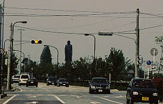

びわこ大仏/滋賀県長浜市
日本最大の淡水湖、琵琶湖である。
最近は外来種のブラックバスが鮎を食べまくったりと生態系の環境問題がクローズアップされがちだが、それとは別に視覚系の環境問題をも巻き起こしそうなデカい大仏さんが琵琶湖のほとりに建つ。

その名もびわ湖大仏。長浜市街からやや南に下った湖岸にそびえ立っている。
寺の名前は良畴寺。失礼ながら大仏持ちの寺の割にはこじんまりした印象の寺である。寺の境内に大仏があるというよりどちらかというと大仏の前庭に寺がある、といった感じ。
このびわ湖大仏、完成が平成6年、並み居る大仏ブラザースの中ではヒヨッ子並みといえる。
（しかし後にヒヨッ子扱いした事を深く悔いるのであった・・・）
早速大仏さんに御挨拶。2段ケーキ状の基段の上に立つ大仏さん、鋳造製で高さ28メートルを誇るものである。いかにも最近出来たらしい深緑色の大仏からはまだまだ大仏フェロモンを出し切っていないような気が・・・
お寺の方が横を通りかかったので声をかけて中に入ってみる。
八角形の台座1階内部には中央に祭壇。壁面にはずらりとびわこ大仏のレプリカが並ぶいつもながらの展開。
大仏の中にレプリカ並べるって、何か意味あるんですかあ〜。
で、階段を昇って2階へ。中央には良畴寺がここにつくられた由来の仏頭がまつられている。
なんでも琵琶湖のこのあたりにこの仏頭が漂着したらしい。
・・・と、だらだらと書いてきたがこれからが本題である。
その仏頭の後に一枚の写真パネルが置かれていた。
うわっ・・・変な大仏だ。
 何とこのびわこ大仏、実は2代目で初代の大仏さんは昭和12年に建てられたというバリバリの戦前大仏だったのだ。
で、上の写真がその初代。
写真に添えられた説明によるとこの初代びわこ大仏、正式には「護国阿弥陀如来」像といい、高さは約27メートル、コンクリート製の堂々たる体躯であったという。
像高は現大仏とほぼ同じだが、写真で見る限りでは台座がやや低かったようなので、総高さとしては現在のものより低かったのだろうが、何せ昭和12年である。当時はとんでもないものが出来たと大騒ぎだった事だろう。
しかし老朽化のため建て替えの運びとなり、現大仏落慶に先立ち、平成4年に解体されている。
戦前大仏にありがちな歪んだプロポーションとちょっと変な顔。もう、モロ私好みの大仏なのである。
しかも頭の両脇には光背の形跡まであるではないか！この大きさで光背付きの大仏なんて・・・
凄いじゃないか！護国阿弥陀如来。
台風とか大丈夫だったのか？、あ、だから取れてるのか。
何とこのびわこ大仏、実は2代目で初代の大仏さんは昭和12年に建てられたというバリバリの戦前大仏だったのだ。
で、上の写真がその初代。
写真に添えられた説明によるとこの初代びわこ大仏、正式には「護国阿弥陀如来」像といい、高さは約27メートル、コンクリート製の堂々たる体躯であったという。
像高は現大仏とほぼ同じだが、写真で見る限りでは台座がやや低かったようなので、総高さとしては現在のものより低かったのだろうが、何せ昭和12年である。当時はとんでもないものが出来たと大騒ぎだった事だろう。
しかし老朽化のため建て替えの運びとなり、現大仏落慶に先立ち、平成4年に解体されている。
戦前大仏にありがちな歪んだプロポーションとちょっと変な顔。もう、モロ私好みの大仏なのである。
しかも頭の両脇には光背の形跡まであるではないか！この大きさで光背付きの大仏なんて・・・
凄いじゃないか！護国阿弥陀如来。
台風とか大丈夫だったのか？、あ、だから取れてるのか。
さて、話をニ代目の大仏に戻す。
二階の初代大仏の写真にクラクラ来ながら、テラスに出る。
大仏の裏手にある階段を上り大仏さんのすぐ足元に行くと、琵琶湖の眺めが美しい。
で、余計なお世話だが手摺の間隔が開き過ぎていてすっごく恐かったんですけど・・・
大仏の台座から出て境内で一服していると、近所のおばさんが大仏さんのお参りに来た。
話を伺うと初代の大仏さんは階段を上って胎内巡りが出来たそうである。来るのが数年遅かった。
写真を見る限り窓のようなものはないので、きっと琵琶湖が見えるよう背中の方にあったのだろう。
さらにおばさんの話では解体された初代大仏の破片は皆納骨堂にあるとの事。
境内を見渡すと、片隅に円墳のような納骨堂があった。
入口の碑文によれば初代大仏の破片全てを収納しているらしい。
納骨堂の前には初代大仏の前にあった香炉が。残ったのはこれだけ。上に立つのは初代大仏のミニチュア。
解体されてまで祀られる大仏。そこまで愛されるなんて大仏冥利に尽きますなあ。
合掌
2001.5.
珍寺大道場 HOME